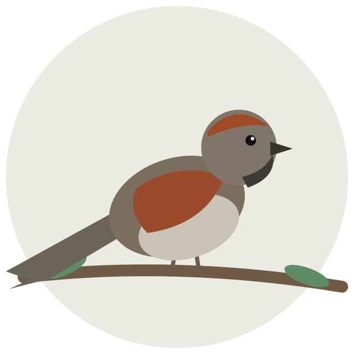
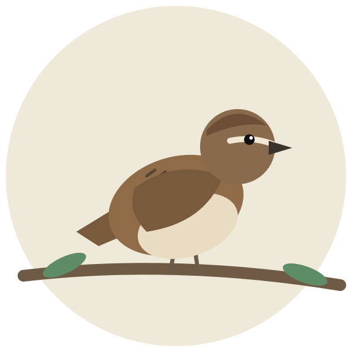
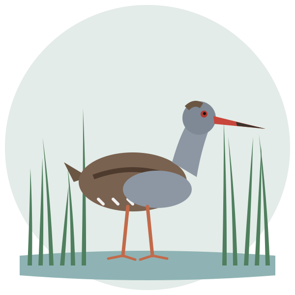
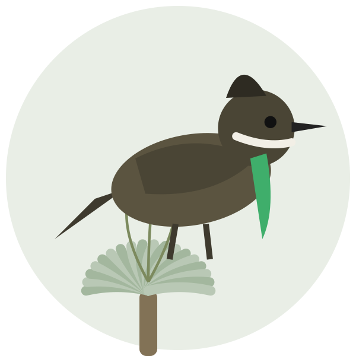

Avistamiento de aves
Actividad de observar e identificar aves silvestres en su hábitat, a simple vista o con binoculares, sin capturarlas ni molestarlas. También se le llama pajarear.
En las fichas de las salidas aparecen palabras como endémica, páramo o playback. Aquí explicamos cada término con palabras sencillas y, cuando es útil, enlazamos una fuente para profundizar.
Los términos subrayados con puntos en todo el sitio llevan a esta página.

Actividad de observar e identificar aves silvestres en su hábitat, a simple vista o con binoculares, sin capturarlas ni molestarlas. También se le llama pajarear.
Instrumento óptico con dos tubos. El primer número indica los aumentos (8 veces) y el segundo, el diámetro de las lentes en milímetros (42 mm). Unos binoculares 8×42 son un buen punto de partida: dan una imagen luminosa y estable.
Sonido largo y elaborado que emite un ave, por lo general un macho, para defender su territorio o atraer pareja. Es distinto en cada especie, por eso sirve para identificarlas.
Sonido corto y simple que las aves usan para comunicarse durante todo el año: avisar de un peligro, mantener unida la bandada o pedir alimento.
Gráfica que representa un sonido: el eje horizontal es el tiempo y el vertical, la frecuencia (qué tan agudo es). Permite «ver» un canto y compararlo con otros.
Especie que solo vive de forma natural en una región determinada y en ninguna otra parte del mundo. El cucarachero de pantano, por ejemplo, es endémico de Colombia.
Especie con riesgo de desaparecer. La Lista Roja de la UICN, que BirdLife International evalúa para las aves, usa tres categorías de amenaza: Vulnerable, En peligro y En peligro crítico.
Zona cubierta de agua de forma permanente o temporal, con plantas como juncos y eneas. En la Sabana de Bogotá los humedales regulan el agua y son refugio de aves acuáticas.
Bosque de montaña donde la niebla es frecuente a la altura de las copas de los árboles. Suele tener abundantes musgos, helechos y plantas que crecen sobre otras.
Ecosistema de alta montaña de los Andes del norte, por encima de unos 3.000 metros de altitud. Funciona como una esponja que capta y regula el agua.
Planta típica de los páramos de Colombia, Venezuela y el norte de Ecuador, del género Espeletia. Tiene un tallo grueso y una roseta de hojas peludas de color gris verdoso.
Práctica de reproducir el canto de un ave con un parlante para atraerla. Puede estresarla y alejarla de su nido, por eso no la usamos con especies amenazadas.
Telescopio de un solo tubo que se monta en un trípode. Tiene más aumentos que los binoculares y se usa para ver aves lejanas, por ejemplo en un lago.
Registro de todas las especies vistas u oídas en una salida, con el número de individuos. En eBird, plataforma gratuita del Laboratorio de Ornitología de Cornell, estas listas se comparten y sirven para la ciencia.
| Imagen | Especie | Nombre científico | Distribución | Categoría |
|---|---|---|---|---|
 | Cucarachero de pantano | Cistothorus apolinari | Endémico de Colombia | En peligro |
 | Tingua bogotana | Rallus semiplumbeus | Altiplano de Ubaté y Bogotá | Vulnerable |
| Chamicero cundiboyacense | Synallaxis subpudica | Endémico de Colombia | Preocupación menor | |
 | Barbudito paramuno | Oxypogon guerinii | Endémico de Colombia | Preocupación menor |